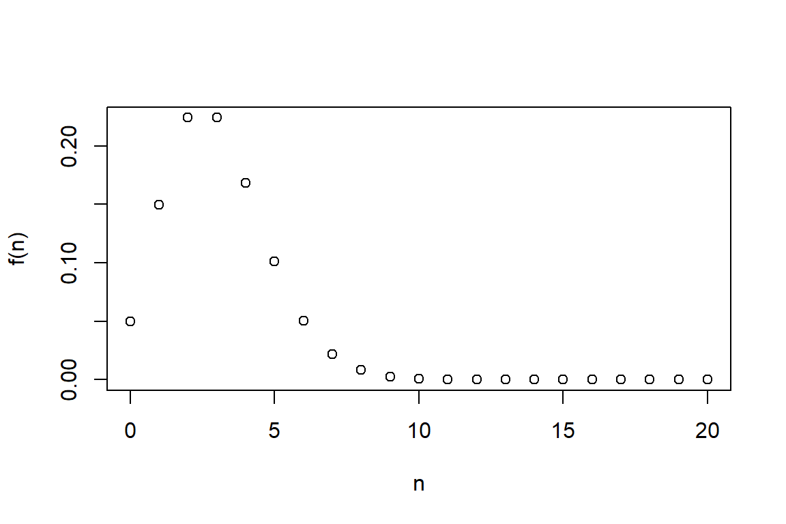
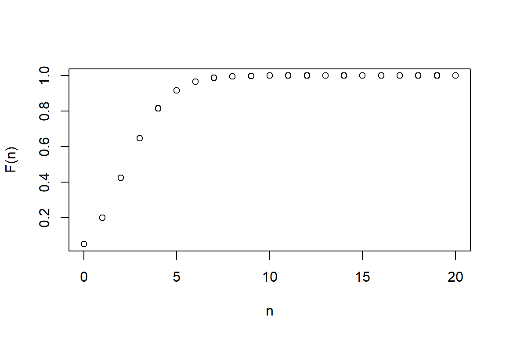
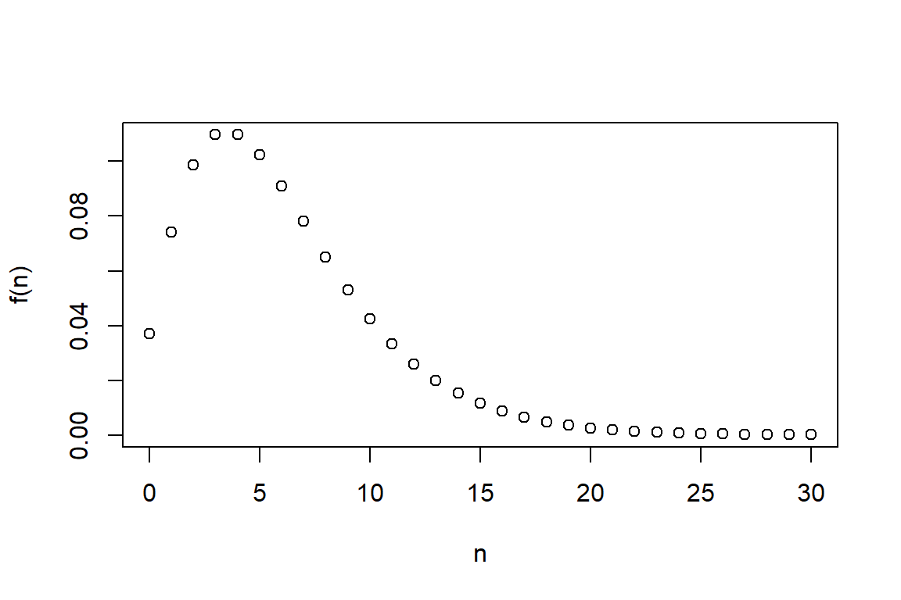
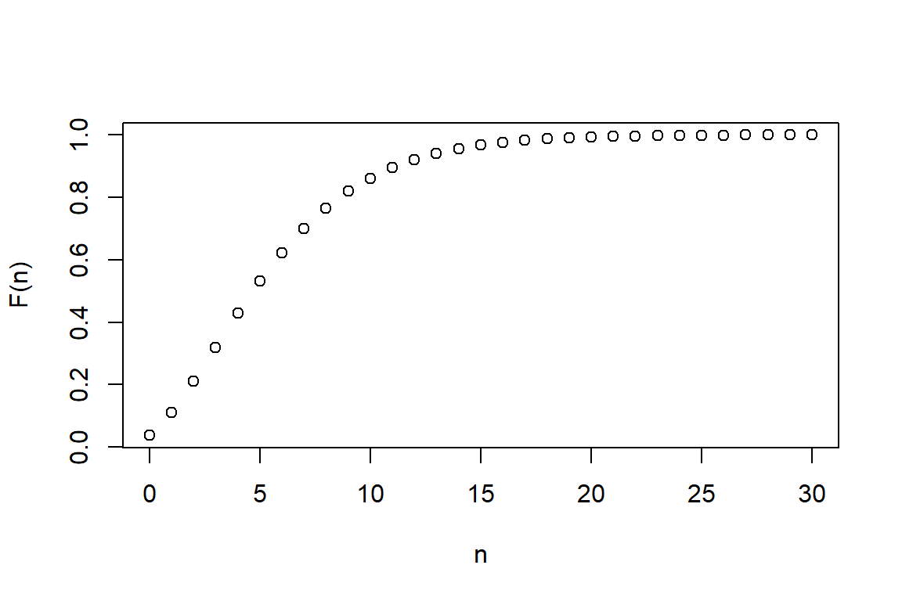
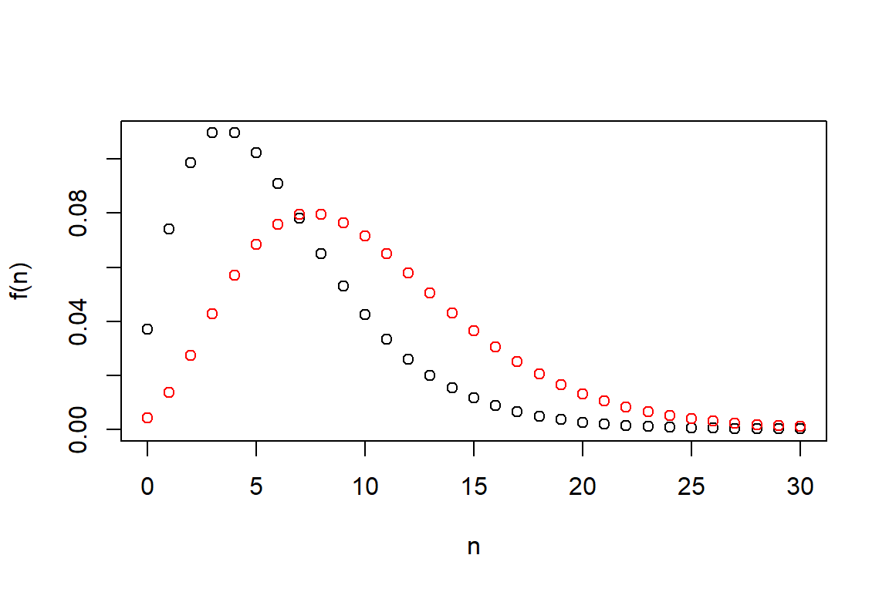
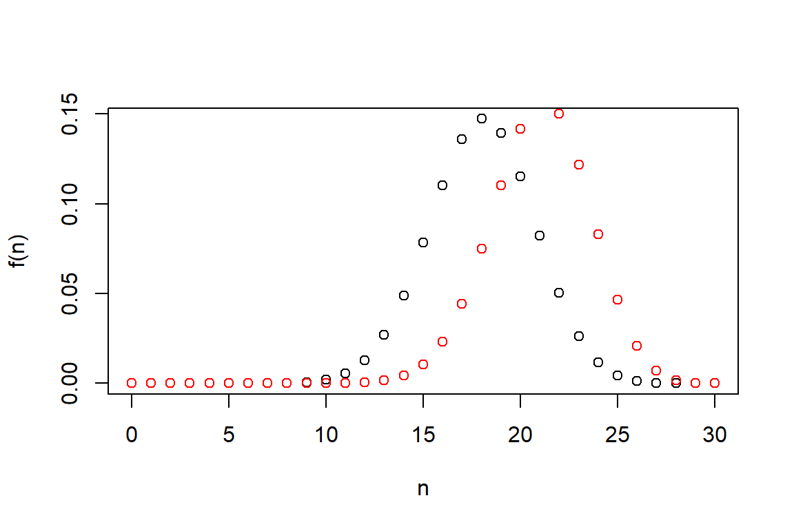
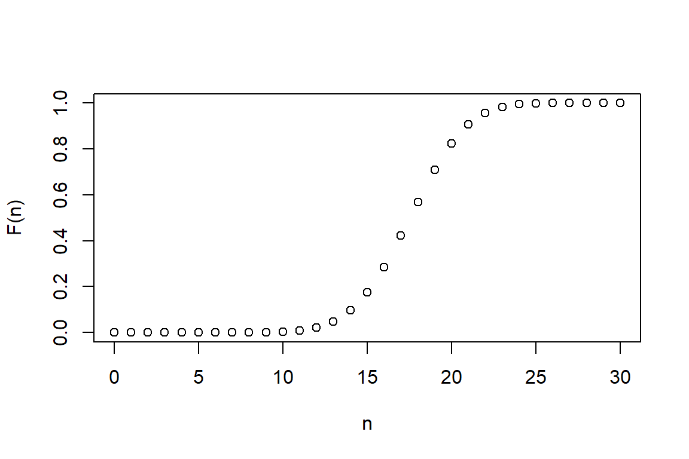
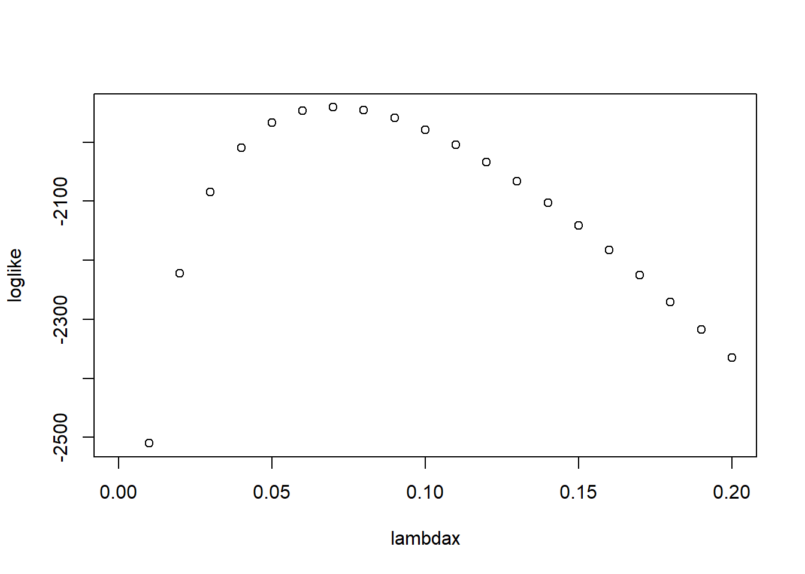

Chapter 3 Frequency Distributions
This file contains illustrative R code for computing important count distributions. When reviewing this code, you should open an R session, copy-and-paste the code, and see it perform. Then, you will be able to change parameters, look up commands, and so forth, as you go.
3.1 Basic Distributions
3.1.1 Poisson Distribution
This sections shows how to compute and graph probability mass and distribution functions for the Poisson distribution.
3.1.1.1 Probability Mass Function (pmf)
lambda <- 3
N<- seq(0,20, 1)
#get the probability mass function using "dpois"
(fn <- dpois(N, lambda)) [1] 4.978707e-02 1.493612e-01 2.240418e-01 2.240418e-01 1.680314e-01
[6] 1.008188e-01 5.040941e-02 2.160403e-02 8.101512e-03 2.700504e-03
[11] 8.101512e-04 2.209503e-04 5.523758e-05 1.274713e-05 2.731529e-06
[16] 5.463057e-07 1.024323e-07 1.807629e-08 3.012715e-09 4.756919e-10
[21] 7.135379e-11# visualize the probability mass function
plot(N,fn,xlab="n",ylab="f(n)") 
A few quick notes on these commands.
<-seqis short-hand for sequence.dpoisis a built-in command in R for generating the “density” (actually the mass) function of the Poisson distribution. Use the online help (help("dpois")) to learn more about this function.- The open paren
(, close paren)tells R to display the output of a calculation to the screen. plotis a very handy command for displaying results graphically.
3.1.1.2 (Cumulative) Probability Distribution Function (cdf)
#get the cumulative distribution function using "ppois"
(Fn <- ppois(N, lambda) ) [1] 0.04978707 0.19914827 0.42319008 0.64723189 0.81526324 0.91608206
[7] 0.96649146 0.98809550 0.99619701 0.99889751 0.99970766 0.99992861
[13] 0.99998385 0.99999660 0.99999933 0.99999988 0.99999998 1.00000000
[19] 1.00000000 1.00000000 1.00000000# visualize the cumulative distribution function
plot(N,Fn,xlab="n",ylab="F(n)") # cdf
3.1.2 Negative Binomial Distribution
This section shows how to compute and graph probability mass and distribution functions for the negative binomial distribution. You will also learn how to plot two functions on the same graph.
3.1.2.1 Probability Mass Function (pmf)
alpha<- 3
theta<- 2
prob<-1/(1+theta)
N<- seq(0,30, 1)
#get the probability mass function using "dnbinom"
(fn <- dnbinom(N, alpha,prob) ) [1] 3.703704e-02 7.407407e-02 9.876543e-02 1.097394e-01 1.097394e-01
[6] 1.024234e-01 9.104303e-02 7.803688e-02 6.503074e-02 5.298801e-02
[11] 4.239041e-02 3.339850e-02 2.597661e-02 1.998201e-02 1.522439e-02
[16] 1.150287e-02 8.627153e-03 6.428075e-03 4.761537e-03 3.508501e-03
[21] 2.572901e-03 1.878626e-03 1.366273e-03 9.900532e-04 7.150384e-04
[26] 5.148277e-04 3.696199e-04 2.646661e-04 1.890472e-04 1.347233e-04
[31] 9.580323e-05# visualize the probability mass function
plot(N,fn,xlab="n",ylab="f(n)") # pmf
3.1.2.1.1 Plot Two Functions on The Same Graph
#Plot Different Negative Binomial Distributions on the same Figure
alpha1 <- 3
alpha2 <- 5
theta <- 2; prob <- 1/(1+theta)
fn1 <- dnbinom(N, alpha1,prob)
fn2 <- dnbinom(N, alpha2,prob)
plot(N,fn1,xlab="n", ylab="f(n)")
lines(N,fn2, col="red", type="p")
A couple notes on these commands:
- You can enter more than one command on a line; separate them using the
;semi-colon. linesis very handy for superimposing one graph on another.- When making complex graphs with more than one function, consider using different colors. The
col="red"tells R to use the color red when plotting symbols.
3.1.2.2 (Cumulative) Probability Distribution Function (cdf)
#get the distribution function using "pnbinom"
(Fn <- pnbinom(N, alpha,prob)) [1] 0.03703704 0.11111111 0.20987654 0.31961591 0.42935528 0.53177869
[7] 0.62282172 0.70085861 0.76588935 0.81887735 0.86126776 0.89466626
[13] 0.92064288 0.94062489 0.95584927 0.96735214 0.97597930 0.98240737
[19] 0.98716891 0.99067741 0.99325031 0.99512894 0.99649521 0.99748526
[25] 0.99820030 0.99871513 0.99908475 0.99934942 0.99953846 0.99967319
[31] 0.99976899plot(N,Fn,xlab="n",ylab="F(n)") # cdf
3.1.3 Binomial Distribution
This section shows how to compute and graph probability mass and distribution functions for the binomial distribution.
3.1.3.1 Probability Mass Function (pmf)
#Plot Different Binomial Distributions on the same Figure
size<- 30
prob<- 0.6
N<- seq(0,30, 1)
fn <- dbinom(N,size ,prob)
plot(N,fn,xlab="n",ylab="f(n)") # pdf
fn2 <- dbinom(N,size ,0.7)
lines(N,fn2, col="red", type="p")
3.1.3.2 (Cumulative) Probability Distribution Function (cdf)
#get the distribution function using "pbinom"
(Fn <- pbinom(N, size,prob)) [1] 1.152922e-12 5.303439e-11 1.181456e-09 1.697936e-08 1.769332e-07
[6] 1.424573e-06 9.222321e-06 4.932503e-05 2.222679e-04 8.563920e-04
[11] 2.853883e-03 8.301584e-03 2.123988e-02 4.811171e-02 9.705684e-02
[16] 1.753691e-01 2.854956e-01 4.215343e-01 5.689095e-01 7.085281e-01
[21] 8.237135e-01 9.059888e-01 9.564759e-01 9.828170e-01 9.943412e-01
[26] 9.984899e-01 9.996867e-01 9.999526e-01 9.999954e-01 9.999998e-01
[31] 1.000000e+00plot(N,Fn,xlab="n",ylab="F(n)") # cdf
3.2 (a,b,0) Class of Distributions
This section shows how to compute recursively a distribution in the (a,b,0) class. The specific example is a Poisson. However, by changing values of a and b, you can use the same recursion for negative binomial and binomial, the other two members of the (a,b,0) class.
lambda<-3
a<-0
b<-lambda
#This loop calculates the (a,b,0) recursive probabilities for the Poisson distribution
p <- rep(0,20)
# Get the probability at n=0 to start the recursive formula
p[1]<- exp(-lambda)
for(i in 1:19)
{
p[i+1]<-(a+b/i)*p[i] # Probability of i-th element using the ab0 formula
}
p [1] 4.978707e-02 1.493612e-01 2.240418e-01 2.240418e-01 1.680314e-01
[6] 1.008188e-01 5.040941e-02 2.160403e-02 8.101512e-03 2.700504e-03
[11] 8.101512e-04 2.209503e-04 5.523758e-05 1.274713e-05 2.731529e-06
[16] 5.463057e-07 1.024323e-07 1.807629e-08 3.012715e-09 4.756919e-10# check using the "dpois" command
dpois(seq(0,20, 1), lambda=3) [1] 4.978707e-02 1.493612e-01 2.240418e-01 2.240418e-01 1.680314e-01
[6] 1.008188e-01 5.040941e-02 2.160403e-02 8.101512e-03 2.700504e-03
[11] 8.101512e-04 2.209503e-04 5.523758e-05 1.274713e-05 2.731529e-06
[16] 5.463057e-07 1.024323e-07 1.807629e-08 3.012715e-09 4.756919e-10
[21] 7.135379e-11A couple notes on these commands.
- There are many basic math commands in R such as
expfor exponentials. - This demo illustrates the use of the
forloop, one of many ways of doing recursive calculations.
3.3 Estimating Frequency Distributions
3.3.1 Singapore Data
This section loads the SingaporeAuto.csv dataset and checks the names of variables and the dimensions of the data. To have a glimpse at the data, the first 8 observations are listed.
Singapore = read.csv("Data/SingaporeAuto.csv", quote = "",header=TRUE)
# Check the names, dimensions in the file and list the first 8 observations ;
names(Singapore) [1] "SexInsured" "Female" "VehicleType" "PC" "Clm_Count"
[6] "Exp_weights" "LNWEIGHT" "NCD" "AgeCat" "AutoAge0"
[11] "AutoAge1" "AutoAge2" "AutoAge" "VAgeCat" "VAgecat1" dim(Singapore) # check number of observations and variables in the data[1] 7483 15Singapore[1:4,] # list the first 4 observations SexInsured Female VehicleType PC Clm_Count Exp_weights LNWEIGHT NCD
1 U 0 T 0 0 0.6680356 -0.40341383 30
2 U 0 T 0 0 0.5667351 -0.56786326 30
3 U 0 T 0 0 0.5037645 -0.68564629 30
4 U 0 T 0 0 0.9144422 -0.08944106 20
AgeCat AutoAge0 AutoAge1 AutoAge2 AutoAge VAgeCat VAgecat1
1 0 0 0 0 0 0 2
2 0 0 0 0 0 0 2
3 0 0 0 0 0 0 2
4 0 0 0 0 0 0 2attach(Singapore) # attach datasetA few quick notes on these commands:
names()- The
dim()function is used to retrieve or set the dimensions of an object. - When you attach a dataset using the
attach()function, variable names in the database can be accessed by simply giving their names.
3.3.2 Claim Frequency Distribution
The table below gives the distribution of observed claims frequency. The Clm_Count variable is the number of automobile accidents per policyholder.
table(Clm_Count) Clm_Count
0 1 2 3
6996 455 28 4 (n <- length(Clm_Count)) # number of insurance policies [1] 74833.3.3 Visualize The Loglikelihood Function
Before maximizing, let us start by visualizing the logarithmic likelihood function. We will fit the claim counts for the Singapore data to the Poisson model. As an illustration, first assume that \(\lambda = 0.5\). The claim count, likelihood, and its logarithmic version, for five observations is
# Five typical Observations
Clm_Count[2245:2249][1] 3 0 1 0 3# Probabilities
dpois(Clm_Count[2245:2249],lambda=0.5)[1] 0.01263606 0.60653066 0.30326533 0.60653066 0.01263606# Logarithmic Probabilities
log(dpois(Clm_Count[2245:2249],lambda=0.5))[1] -4.371201 -0.500000 -1.193147 -0.500000 -4.371201By hand, you can check that the sum of log likelihoods for these five observations is -10.9355492. In the same way, the sum of all 7483 observations is
sum(log(dpois(Clm_Count,lambda=0.5)))[1] -4130.591Of course, this is only for the choice \(\lambda = 0.5\). The following code defines the log likelihood to be a function of \(\lambda\) and plots the function for several choices of \(\lambda\):
loglikPois<-function(parms){
lambda=parms[1]
llk <- sum(log(dpois(Clm_Count,lambda)))
llk
} # Defines the (negative) Poisson loglikelihood function
lambdax <- seq(0,.2,.01)
loglike <- 0*lambdax
for (i in 1:length(lambdax))
{
loglike[i] <- loglikPois(lambdax[i])
}
plot(lambdax,loglike)
If we had to guess, from this plot we might say that the maximum value of the log likelihood was around 0.07.
3.3.4 The Maximum Likelihood Estimate of Poisson Distribution
From calculus, we know that the maximum likelihood estimator (mle) of the Poisson distribution parameter equals the average claim count. For our data, this is
mean(Clm_Count)[1] 0.06989175As an alternative, let us use an optimization routine nlminb. Most optimization routines try to minimize functions instead of maximize them, so we first define the negative loglikelihood function.
negloglikPois<-function(parms){
lambda=parms[1]
llk <- -sum(log(dpois(Clm_Count,lambda)))
llk
} # Defines the (negative) Poisson loglikelihood function
ini.Pois <- 1
zop.Pois <- nlminb(ini.Pois,negloglikPois,lower=c(1e-6),upper=c(Inf))
print(zop.Pois) # In output, $par = MLE of lambda, $objective = - loglikelihood value$par
[1] 0.06989175
$objective
[1] 1941.178
$convergence
[1] 0
$iterations
[1] 17
$evaluations
function gradient
23 20
$message
[1] "relative convergence (4)"So, the maximum likelihood estimate, zop.Pois$par = 0.0698918 is exactly the same as the value that we got by hand.
Because actuarial analysts calculate Poisson mle’s so regularly, here is another way of doing the calculation using the glm, generalized linear model, package.
CountPoisson1 = glm(Clm_Count ~ 1,poisson(link=log))
summary(CountPoisson1)
Call:
glm(formula = Clm_Count ~ 1, family = poisson(link = log))
Deviance Residuals:
Min 1Q Median 3Q Max
-0.3739 -0.3739 -0.3739 -0.3739 4.0861
Coefficients:
Estimate Std. Error z value Pr(>|z|)
(Intercept) -2.66081 0.04373 -60.85 <2e-16 ***
---
Signif. codes: 0 '***' 0.001 '**' 0.01 '*' 0.05 '.' 0.1 ' ' 1
(Dispersion parameter for poisson family taken to be 1)
Null deviance: 2887.2 on 7482 degrees of freedom
Residual deviance: 2887.2 on 7482 degrees of freedom
AIC: 3884.4
Number of Fisher Scoring iterations: 6(lambda_hat<-exp(CountPoisson1$coefficients))(Intercept)
0.06989175 A few quick notes on these commands and results:
- The
glm()function is used to fit generalized linear models. Seehelp(glm)for other modeling options. In order to get the results we use thesummary()function. - In the output,
callreminds us what model we ran and what options were specified. - The
Deviance Residualsshows the distribution of the deviance residuals for individual cases used in the model. - The next part of the output shows the coefficient (maximum likelihood estimate of \(\log(\lambda)\)), its standard error, the z-statistic and the associated p-value.
- To get the estimated \(\lambda\) we take the \(\exp\)(coefficient)
lambda_hat<-exp(CountPoisson1$coefficients).
3.3.5 The Maximum Likelihood Estimate of The Negative Binomial Distribution
In the same way, here is code for determining the maximum likelihood estimates for the negative binomial distribution.
dnb <- function(y,r,beta){
gamma(y+r)/gamma(r)/gamma(y+1)*(1/(1+beta))^r*(beta/(1+beta))^y
}
loglikNB<-function(parms){
r=parms[1]
beta=parms[2]
llk <- -sum(log(dnb(Clm_Count,r,beta)))
llk
} # Defines the (negative) negative binomial loglikelihood function
ini.NB <- c(1,1)
zop.NB <- nlminb(ini.NB,loglikNB,lower=c(1e-6,1e-6),upper=c(Inf,Inf))
print(zop.NB) # In output, $par = (MLE of r, MLE of beta), $objective = - loglikelihood value$par
[1] 0.87401622 0.07996624
$objective
[1] 1932.383
$convergence
[1] 0
$iterations
[1] 24
$evaluations
function gradient
30 60
$message
[1] "relative convergence (4)"Two quick notes:
- There are two parameters for this distribution, so that calculation by hand is not a good alternative.
- The maximum likelihood estimator of r, 0.8740162, is not an integer.
3.4 Goodness of Fit
This section shows how to check the adequacy of the Poisson and negative binomial models for the Singapore data.
First, note that the variance for the count data is 0.0757079 which is greater than the mean value, 0.0698918. This suggests that the negative binomial model is preferred to the Poisson model.
Second, we will compute the Pearson goodness-of-fit statistic.
3.4.1 Pearson Goodness-of-Fit Statistic
The table below gives the distribution of fitted claims frequency using Poisson distribution \(n \times p_k\)
table1p = cbind(n*(dpois(0,lambda_hat)),
n*(dpois(1,lambda_hat)),
n*(dpois(2,lambda_hat)),
n*(dpois(3,lambda_hat)),
n*(1-ppois(3,lambda_hat))) # or n*(1-dpois(0,lambda_hat)-dpois(1,lambda_hat)-
# dpois(2,lambda_hat)-dpois(3,lambda_hat)))
actual = data.frame(table(Clm_Count))[,2];
actual[5] = 0 # assign 0 to claim counts greater than or equal to 4 in observed data
table2p<-rbind(c(0,1,2,3,"4+"),actual,round(table1p, digits = 2))
rownames(table2p) <- c("Number","Actual", "Estimated Using Poisson")
table2p [,1] [,2] [,3] [,4] [,5]
Number "0" "1" "2" "3" "4+"
Actual "6996" "455" "28" "4" "0"
Estimated Using Poisson "6977.86" "487.69" "17.04" "0.4" "0.01"For goodness of fit, consider Pearson’s chi-square statistic below. The degrees of freedom (df) equals the number of cells minus one minus the number of estimated parameters.
# PEARSON GOODNESS-OF-FIT STATISTIC
diff = actual-table1p
(Pearson_p = sum(diff*diff/table1p))[1] 41.98438# p-value
1-pchisq(Pearson_p, df=5-1-1)[1] 4.042861e-09The large value of the goodness of fit statistic 41.984382 or the small p value indicates that there is a large difference between actual counts and those anticipated under the Poisson model.
3.4.2 Negative Binomial Goodness-of-Fit Statistic
Here is another way of determining the maximum likelihood estimator of the negative binomial distribution.
library(MASS)
fm_nb <- glm.nb(Clm_Count~1,link=log)
summary(fm_nb)
Call:
glm.nb(formula = Clm_Count ~ 1, link = log, init.theta = 0.8740189897)
Deviance Residuals:
Min 1Q Median 3Q Max
-0.3667 -0.3667 -0.3667 -0.3667 3.4082
Coefficients:
Estimate Std. Error z value Pr(>|z|)
(Intercept) -2.66081 0.04544 -58.55 <2e-16 ***
---
Signif. codes: 0 '***' 0.001 '**' 0.01 '*' 0.05 '.' 0.1 ' ' 1
(Dispersion parameter for Negative Binomial(0.874) family taken to be 1)
Null deviance: 2435.5 on 7482 degrees of freedom
Residual deviance: 2435.5 on 7482 degrees of freedom
AIC: 3868.8
Number of Fisher Scoring iterations: 1
Theta: 0.874
Std. Err.: 0.276
2 x log-likelihood: -3864.767 With these new estimates (or you could use the general procedure we introduced earlier), we can produce a table of counts and fitted counts and use this to calculate the goodness-of-fit statistic.
fm_nb$theta[1] 0.874019beta <- exp(fm_nb$coefficients)/fm_nb$theta
prob <- 1/(1+beta)
table1nb = cbind(n*(dnbinom(0,size=fm_nb$theta,prob)),
n*(dnbinom(1,size=fm_nb$theta,prob)),
n*(dnbinom(2,size=fm_nb$theta,prob)),
n*(dnbinom(3,size=fm_nb$theta,prob)),
n*(dnbinom(4,size=fm_nb$theta,prob)));
table2nb<-rbind(c(0,1,2,3,"4+"),actual,round(table1nb, digits = 2))
rownames(table2nb) <- c("Number","Actual", "Estimated Using Neg Bin")
table2nb [,1] [,2] [,3] [,4] [,5]
Number "0" "1" "2" "3" "4+"
Actual "6996" "455" "28" "4" "0"
Estimated Using Neg Bin "6996.4" "452.78" "31.41" "2.23" "0.16"# PEARSON GOODNESS-OF-FIT STATISTIC
diff = actual-table1nb
( Pearson_nb = sum(diff*diff/table1nb) )[1] 1.95024# p-value
1-pchisq(Pearson_nb, df=5-2-1)[1] 0.3771472The small value of the goodness of fit statistic 1.9502395 or the high p value 0.3771472 both indicate that the negative binomial provides a better fit to the data than the Poisson.